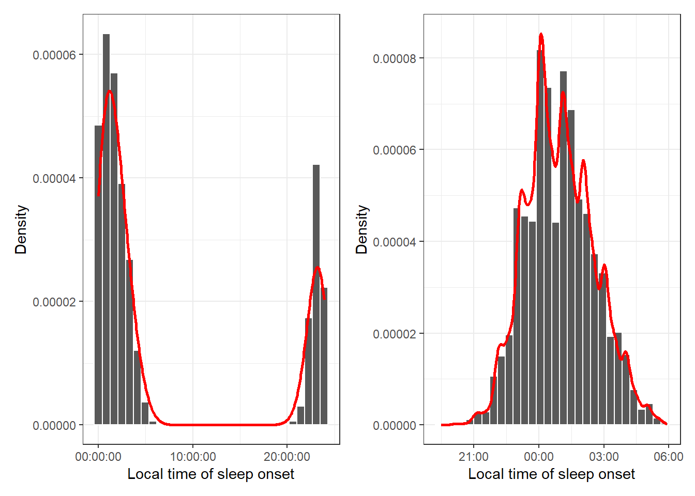
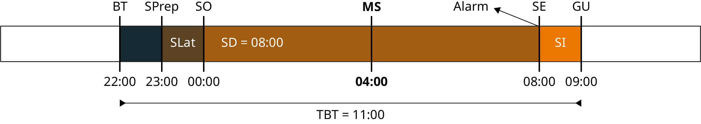
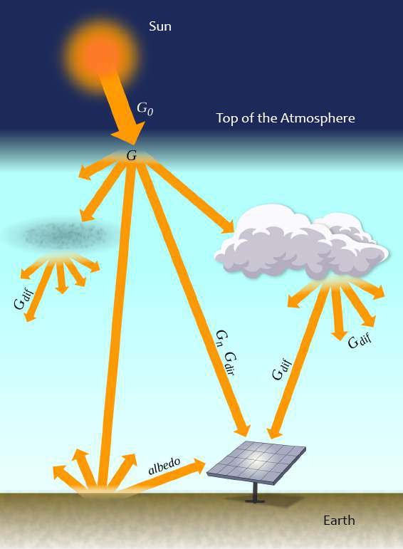
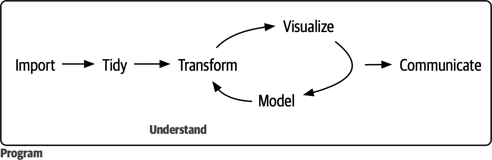

Appendix B — Methods
B.1 Overview
This document focus in providing a detailed explanation of the methods and steps involved in building the models and testing the thesis hypothesis.
For a comprehensive review of the thesis question and hypothesis, please refer to other supplementary materials.
B.2 Approach and Procedure Method
This study adopted the hypothetical-deductive method, also known as the method of conjecture and refutation (Popper, 1979, p. 164), to approach problem-solving. As a procedural method, it utilized an enhanced version of Null Hypothesis Significance Testing (NHST), grounded in the original Neyman-Pearson framework for data testing (Neyman & Pearson, 1928a, 1928b; Perezgonzalez, 2015).
B.3 Measurement Instrument
Chronotypes were assessed using a sleep log based on the core version of the standard Munich ChronoType Questionnaire (MCTQ) (Roenneberg et al., 2003), a well-validated and widely applied self-report tool for measuring sleep-wake cycles and chronotypes (Roenneberg et al., 2019). The MCTQ captures chronotype as a biological circadian phenotype, determined by the sleep-corrected midpoint of sleep (MSFsc) on work-free days, accounting for any potential sleep compensation due to sleep deficits on workdays (Roenneberg, 2012).
Participants completed an online questionnaire, which included the sleep log as well as sociodemographic (e.g., age, sex), geographic (e.g., full residential address), anthropometric (e.g., weight, height), and data on work or study routines. A sample version of the questionnaire, stored independently by the Internet Archive organization can be viewed at https://web.archive.org/web/20171018043514/each.usp.br/gipso/mctq.

Source: Create by the author.
B.4 Sample
The validated dataset used for analysis is made up of \(65\,824\) Brazilian individuals aged 18 or older, residing in the UTC-3 timezone, who completed the survey between October 15 and 21, 2017.
The unfiltered valid sample comprises \(115\,166\) participants from all Brazilian states, while the raw sample is composed of \(120,265\) individuals. The majority of the sample data was obtained in 2017 from October 15th to 21st by a broadcast of the online questionnaire on a popular Brazil’s Sunday TV show with national reach (Rede Globo, 2017). This amount of data collected in such a short time gave the sample a population cross-sectional characteristic.
Source: Reproduction from Rede Globo (2017).
A survey conducted in 2019 by the Brazilian Institute of Geography and Statistics (IBGE) (2021) found that \(82.17\%\) of Brazilian households had access to an internet connection. Therefore, this sample is likely to have a good representation of Brazil’s population.
Daylight Saving Time (DST) began in Brazil at midnight on October 15th, 2017. Residents from the Midwest, Southeast, and South regions were instructed to set the clock forward by 1 hour. We believe that this event did not contaminate the data since it started on the same day of the data collection. It’s important to notice that we asked subjects to relate their routine behavior, not how they behaved in the last few days. A possible effect of the DST on the sample would be the production of an even later chronotype for populations near the planet’s poles, amplifying a possible latitude effect. However, this was not shown on the data.
To balance the sample, a weighting procedure was applied to the data. The weights were calculated by cell weighting, using the sex, age group and Brazil’s state as reference This procedure can be found on the Sample balance procedure supplementary material.
More information about the sample can be found on the Exploratory data analysis supplementary material.
B.5 Secondary Data
Secondary data were collected from various sources to complement the analysis. These data include geographical information, solar irradiance data, and solar time data.
B.5.1 Geographical Data
Geographic data were collected by the variables country, state, municipality, and postal code. The unique values of those data were manually inspected and adjusted using lookup tables. The municiplaity values were first matched using string distance algorithms present in the stringdist R package and data from the Brazilian Institute of Geography and Statistics (IBGE) via the geobr R package., other processes were then performed manually.
This was a hard task involving crossing information from different sources, such as the QualoCEP (Qual o cep, 2024), Google Geocoding [google], ViaCEP (ViaCEP, n.d.), and OpenStreetMap (OpenStreetMap contributors, n.d.) databases, along with the Brazilian postal service (Correios) postal code documentation. Hence, the data matching shown in the lookup table was gathered considering not only one variable, but the whole set of geographical information provided by the respondent. Special cases were coded in the lookup table named special_cases
All values were also checked for ambiguities, including the municipalities names (e.g., the name Aracoiba could refer to the municipality of Aracoiaba in the state of Ceará, but could also refer to the municipality of Araçoiaba da Serra in the state of São Paulo). All values that had a similarity or pattern matching with one or more municipalities were manually inspected to avoid errors (see get_more_than_one_geographical_match function in the code repository).
B.5.1.1 Postal codes
After removing all non-numeric characters from the Brazilian postal codes (Código de Endereçamento Postal (CEP)), they were processed by the following rules:
- If they had 9 or more digits, they were truncated to 8 digits (the first 8 digits are the postal code).
- If they between 5 and 7 digits, they were complemented with
0s at the ending. - If they had less than 5 digits, they were discarded.
In addition, a visual inspection was performed to check for inconsistencies.
After this process, the postal codes were matched with the QualoCEP database (Qual o cep, 2024). Existing postal codes were than validated by the following rules:
- If the postal code had not been modified and the state or the municipality was the same, it was considered valid.
- If the postal code had been modified and the state and municipality were the same, it was considered valid.
- Else, it was considered invalid. Invalid CEPs were discarded in the processed dataset.
Invalid postal codes were then matched with data derived from reverse geocoding using Google Geocoding API (Google, n.d.) via the tidygeocoder R package (Cambon et al., 2021), which is stored in the thesis lookup tables. After that, the same process of validation was performed. The API data was able to reduce invalid postal codes from 563 ro 292, a 48.13% reduction. The postal codes that were not validated were discarded from the final data.
It’s important to note that some postal codes could not be evaluated because they were missing the state or municipality information. These postal codes were maintained, but no geocode data was associated with them.
Finally, the state and municipality variables were adjusted using the data from the valid postal codes.
Non-Brazilian postal codes were not validated, but they were cleaned by removing non-digit characters and codes with 3 digits or less. They also went through a process da cleaning via visual inspection. Their values can be found in the special_cases lookup table.
B.5.1.2 Latitudes and Longitudes
Latitudes and longitudes values consider only the municipality and postal_code variables. They were extracted from the QualoCEP database, which is the result of a reverse geocoding using the Google Geocoding API. See Appendice 6 to side by side comparison of the latitudes and longitudes from QualoCEP and Google Geocoding API.
For respondents who did not provide a valid postal code, the latitude and longitude were extracted via the mean of the latitudes and longitudes associated with the municipality in the QualoCEP database.
Finally, Google Geocoding API, via the tidygeocoder R package, was used on cases that didn’t had a match in the QualoCEP database.
B.5.2 Solar Irradiance Data
The solar irradiance data is based on Brazil’s National Institute for Space Research (INPE) 2017 Laboratory of Modeling and Studies of Renewable Energy Resources (LABREN) 2017 Solar Energy Atlas (Pereira et al., 2017). In particular, it was used the Global Horizontal Irradiance (GHI) data, which is the total amount of irradiance received from above by a surface horizontal to the ground.
The data comprise annual and monthly averages of the daily total irradiation in Wh/m².day with spatial resolution of 0.1° x 0.1° (latitude/longitude) (about 10km x 10km). It’s important to note that the sample was collected in the same year of the radiance data.

Source: Adapted from Pereira et al. (2017).
B.5.3 Solar Time Data
The suntools R package (Bivand & Luque, n.d.) was used to calculate the local of time of sunrise, sunset, and daylight duration for a given date and location. suntools functions are based on equations provided by Meeus (1991) and by the United States’s National Oceanic & Atmospheric Administration (NOAA).
The data and time of the equinox and solstices were gathered from the Time and Date AS service (Time and Date AS, n.d.). For validity, this data was checked with the equations from Meeus (1991) and the results of the National Aeronautics and Space Administration (NASA) ModelE AR5 Simulations (National Aeronautics and Space Administration & Goddard Institute for Space Studies, n.d.).
B.6 Data Management Plan
A data management plan for this study was created and published using the California Digital Library’s DMP Tool (Vartanian, 2024). It is available at https://doi.org/10.17605/OSF.IO/3JZ7K.
All data are stored in the study’s research compendium on the Open Source Framework (OSF), hosted on Google Cloud servers in the USA. Access to the compendium is restricted, and data are encrypted using a 4096-bit RSA key pair (Rivest-Shamir-Adleman), along with a unique 32-byte project password.
Access to the data requires authorization from the author on the Open Science Framework (OSF) and the installation of the necessary encryption keys.
B.7 Data Wrangling
Data wrangling and analysis followed the data science program proposed by Hadley Wickham and Garrett Grolemund (Wickham, 2016) Figure B.4. All processes were made with the help of the R programming language (R Core Team, n.d.), RStudio IDE (Posit Team, n.d.), and several R packages. The tidyverse and rOpenSci peer-reviewed package ecosystem and other R packages adherents of the tidy tools manifesto (Wickham & Bryan, 2023) were prioritized. The MCTQ data was analyzed using the mctq rOpenSci peer-reviewed package (Vartanian, 2023). All processes were made in order to provide result reproducibility and to be in accordance with the FAIR principles (Wilkinson et al., 2016).

Source: Reproduced from Wickham et al. (2023).
B.7.1 Pipeline
The pipeline for data processing is based on the framework outlined in the targets R package manual. You can view and reproduce this pipeline in the _target.R file located at the root of the thesis code repository.
Code
glue::glue(
"
``` {{.r filename='_targets.R'}}
{paste0(readLines(here::here('_targets.R')), collapse = '\n')}” )
``` {.r filename='_targets.R'}
# See <https://books.ropensci.org/targets/> to learn more.
# library(here)
library(tarchetypes)
library(targets)
source(here::here("R", "get_raw_data.R"))
source(here::here("R", "tidy_data_.R"))
source(here::here("R", "validate_data.R"))
source(here::here("R", "analyze_data.R"))
source(here::here("R", "geocode_data.R"))
source(here::here("R", "add_solar_data.R"))
source(here::here("R", "anonymize_data.R"))
source(here::here("R", "filter_data.R"))
source(here::here("R", "weigh_data.R"))
source(here::here("R", "lock_and_store_data.R"))
targets::tar_option_set(
packages = c(
"cli",
"curl",
"dplyr",
"here",
"hms",
"lockr", # github.com/danielvartan/lockr
"lubridate", # For masking reasons.
"lubritime", # github.com/danielvartan/lubritime
"methods",
"mctq",
"prettycheck", # github.com/danielvartan/prettycheck
"osfr",
"readr",
"rlang",
"rutils", # github.com/danielvartan/rutils
"scaler", # github.com/danielvartan/scaler
"stringr",
"tidyr",
"utils"
)
)
# tar_make_clustermq() is an older (pre-{crew}) way to do distributed computing
# in {targets}, and its configuration for your machine is below.
options(clustermq.scheduler = "multiprocess")
# tar_make_future() is an older (pre-{crew}) way to do distributed computing
# in {targets}, and its configuration for your machine is below.
future::plan(future.callr::callr)
# Run the R scripts in the R/ folder with your custom functions:
# targets::tar_source(files = here::here("R"))
# source("other_functions.R") # Source other scripts as needed.
# Replace the target list below with your own:
list(
targets::tar_target(
name = raw_data,
command = get_raw_data()
),
targets::tar_target(
name = tidy_data,
command = tidy_data_(raw_data)
),
targets::tar_target(
name = validated_data,
command = validate_data(tidy_data)
),
targets::tar_target(
name = analyzed_data,
command = analyze_data(validated_data)
),
targets::tar_target(
name = geocoded_data,
command = geocode_data(analyzed_data)
),
targets::tar_target(
name = added_data,
command = add_solar_data(geocoded_data)
),
targets::tar_target(
name = anonymized_data,
command = anonymize_data(added_data)
),
targets::tar_target(
name = filtered_data,
command = filter_data(anonymized_data)
),
targets::tar_target(
name = weighted_data,
command = weigh_data(filtered_data)
)
# targets::tar_target(
# name = locked_data,
# command = lock_and_store_data(weighted_data)
# )
)B.7.2 Lookup Tables
Along with the data cleaning procedures described in the pipeline, lookup tables were employed to clean text and character variables. These tables were created by manually inspecting the unique values of the raw data and correcting common misspellings, synonyms, and other inconsistencies. The tables are stored in the research compendium of this thesis.
Text/character variables: track, names, email, country, state, municiplality, postalcode, sleep_drugs_which, sleep_disorder_which, medication_which.
The lookup tables are available in the research compendium of this thesis. They had to be encrypted because of the sensitive information they contain. If you need access, please contact the author.
The matching of the variables sleep_drugs_which, sleep_disorder_which, medication_which is not complete. This variables were not used in the analysis, but they are available in the research compendium.
Read the section about geographical information to learn more about the matching process.
B.7.3 Circular Statistics
MCTQ is based on local time data, which are circular in nature (i.e., it cycles every 24 hours). Performing statistics with this kind of variables is challenging, since it can have different values depending on each arc/interval of the circle is used.
For example, the distance between 23:00 (the values here are always in the 24 hour scale) and 01:00 can be 02:00 or 22:00 depending on the direction of the measurement. Hence, the analysis will always have to choose a direction Figure B.5.
- <--- h ---> +
origin
. . . 0 . . .
. .
. .
. .
. .
. .
18 6
. .
. .
. .
. .
. .
. . . 12 . . .
18 + 6 = 0hSource: Create by the author.
The analysis assumed as a method for dealing with this issue the adaptation of the values using the 12:00 hour as a reference point. This method is appropriated when dealing with sleep data.
Consider the local time of sleep onset. We can observe that some subjects start sleeping before midnight, while others sleep after midnight. By the context of the data, we know that the circle arc/interval Figure B.6 here is the shorter one, since the great majority of people don’t usually sleep in daytime and for more than 12 hours.
day 1 day 2 x y x y 06:00 22:00 06:00 22:00 -----|------------------|---------|------------------|-----> 16h 8h 16h longer int. shorter int. longer int.
Source: Create by the author.
Using the 12:00 hour a threshold, it’s possible to calculate the correct distance between times during the calculations. This method link the values in a two-day timeline, with values equal or greater than 12:00 allocated on day 1, and values with less than 12:00 allocated on day 2. This way, the distance between 23:00 and 01:00 is 02:00, the distance between 01:00 and 23:00 is 22:00 (i.e., there is no gap between data points) Figure B.7.
Code
# library(dplyr)
# library(ggplot2)
# library(here)
# library(lubritime)
# library(patchwork)
# library(tidyr)
source(here::here("R", "plot_hist.R"))
weighted_data <- targets::tar_read(
"weighted_data",
store = here::here("_targets")
)
plot_1 <-
weighted_data |>
dplyr::select(so_f) |>
tidyr::drop_na() |>
plot_hist(
col = "so_f",
x_label = "Local time of sleep onset",
print = FALSE
)
plot_2 <-
weighted_data |>
dplyr::select(so_f) |>
dplyr::mutate(
so_f = lubritime:::link_to_timeline(
so_f,
threshold = hms::parse_hms("12:00:00")
)
) |>
tidyr::drop_na() |>
plot_hist(
col = "so_f",
x_label = "Local time of sleep onset",
print = FALSE
)
patchwork::wrap_plots(
plot_1, plot_2,
ncol = 2
)Source: Create by the author.
B.7.4 Round-Off Errors
The R programming language only stores values up to 53 binary bits, that’s about \(15\.955\) digits of precision (\(x = 53 \log_{10}(2)\)). Since MCTQ deals with self-reported local time of day (e.g., 02:30) and duration (e.g., 15 minutes), a greater floating-point precision is unnecessary. Even with multiple computations, round-off errors wouldn’t significantly impact the phenomenon under study.
Even considering that POSIXct objects are used in the models, there is still a good margin of precision – POSIXct objects are data-time objects measured by the amount of seconds since the UNIX epoch (1970-01-01).
B.8 Hypothesis Test
The study hypothesis was tested using nested models general linear models of multiple linear regressions. The main idea of nested models is to verify the effect of the inclusion of one or more predictors in the model variance explanation (i.e., the \(\text{R}^{2}\)) (Allen, 1997; Maxwell et al., 2018). This can be made by creating a restricted model and then comparing it with a full model. Hence, the hypothesis can be schematized as follows.
Null hypothesis (\(\text{H}_{0}\)): Adding latitude does not meaningfully improve the model’s fit, indicating that the change in adjusted \(\text{R}^{2}\) is negligible or the F-test is not significant (considering a type I error probability (\(\alpha\)) of \(0.05\)).
Alternative Hypothesis (\(\text{H}_{a}\)): Adding latitude significantly improves the model’s fit, indicating that the change in adjusted \(\text{R}^{2}\) is greater than the Minimum Effect Size (MES), and the F-test is significant (considering a type I error probability (\(\alpha\)) of \(0.05\)).
\[ \begin{cases} \text{H}_{0}: \Delta \ \text{Adjusted} \ \text{R}^{2} \leq \text{MES} \quad \text{or} \quad \text{F-test is not significant} \ (\alpha \geq 0.05) \\ \text{H}_{a}: \Delta \ \text{Adjusted} \ \text{R}^{2} > \text{MES} \quad \text{and} \quad \text{F-test is significant} \ (\alpha < 0.05) \end{cases} \]
Where:
\[ \Delta \ \text{Adjusted} \ \text{R}^{2} = \text{Adjusted} \ \text{R}^{2}_{f} - \text{Adjusted} \ \text{R}^{2}_{r} \]
The general equation for the F-test for nested models (Allen, 1997, p. 113) is:
\[ \text{F} = \cfrac{\text{R}^{2}_{f} - \text{R}^{2}_{r} / (k_{f} - k_{R})}{(1 - \text{R}^{2}_{f}) / (\text{N} - k_{f} - 1)} \]
Where:
- \(\text{R}^{2}_{F}\) = Coefficient of determination for the full model;
- \(\text{R}^{2}_{R}\) = Coefficient of determination for the restricted model;
- \(k_{F}\) = Number of independent variables in the full model;
- \(k_{R}\) = Number of independent variables in the restricted model;
- \(\text{N}\) = Number of observations in the sample.
\[ \text{F} = \cfrac{\text{Additional Var. Explained} / \text{Additional d.f. Expended}}{\text{Var. unexplained} / \text{d.f. Remaining}} \]
A MES must always be used in any data testing. The effect-size was present in the original Neyman and Pearson framework (Neyman & Pearson, 1928a, 1928b), but unfortunately this practice fade away with the use of p-values, one of the many issues that came with the Null Hypothesis Significance Testing (NHST) (Perezgonzalez, 2015). While p-values are estimates of type 1 error (in Neyman–Pearson’s approaches, or like-approaches), that’s not the main thing we are interested while doing a hypothesis test, what is really being test is the effect size (i.e., a practical significance). Another major issue to only relying on p-values is that the estimated p-value tends to decrease when the sample size is increased, hence, focusing just on p-values with large sample sizes results in the rejection of the null hypothesis, making it not meaningful in this specific situation (Gómez-de-Mariscal et al., 2021; Lin et al., 2013).
Publications related to issues regarding the misuse of p-value are plenty. For more on the matter, I recommend Perezgonzalez (2015) review of Fisher’s and Neyman-Pearson’s data test proposals, Lin et al. (2013) and Gómez-de-Mariscal et al. (2021) studies about large Samples and the p-value problem, and Cohen’s essays on the subject (like Cohen (1990) and Cohen (1994)).
It’s important to note that, in addition to the F-test, it’s assumed that for \(\text{R}^{2}_{\text{r}}\) to differ significantly from \(\text{R}^{2}_{\text{f}}\), there must be a non-negligible effect size between them. This effect size can be calculated using Cohen’s \(f^{2}\) (Cohen, 1988, 1992):
\[ \text{Cohen's } f^2 = \cfrac{\text{R}^{2}}{1 - \text{R}^{2}} \]
For nested models, this can be adapted as follows:
\[ \text{Cohen's } f^2 = \cfrac{\text{R}^{2}_{f} - \text{R}^{2}_{r}}{1 - \text{R}^{2}_{f}} = \cfrac{\Delta \text{R}^{2}}{1 - \text{R}^{2}_{f}} \]
\[ f^{2} = \cfrac{\text{Additional Var. Explained}}{\text{Var. unexplained}} \]
Considering the particular emphasis that the solar zeitgeber has on the entrainment of biological rhythms (as demonstrated in many experiments), it would not be reasonable to assume that the latitude hypothesis could be supported without at least a non-negligible effect size. With this in mind, this analysis will use Cohen’s threshold for small/negligible effects, the Minimum Effect Size (MES) (\(\delta\)) is defined as 0.02 (Cohen, 1988, p. 413; 1992, p. 157).
In Cohen’s words:
What is really intended by the invalid affirmation of a null hypothesis is not that the population ES [Effect Size] is literally zero, but rather that it is negligible, or trivial (Cohen, 1988, p. 16).
SMALL EFFECT SIZE: \(f^2 = .02\). Translated into ^{2} or partial ^{2} for Case 1, this gives \(.02 / (1 + .02) = .0196\). We thus define a small effect as one that accounts for 2% of the \(\text{Y}\) variance (in contrast with 1% for \(r\)), and translate to an \(\text{R} = \sqrt{0196} = .14\) (compared to .10 for \(r\)). This is a modest enough amount, just barely escaping triviality and (alas!) all too frequently in practice represents the true order of magnitude of the effect being tested (Cohen, 1988, p. 413).
[…] in many circumstances, all that is intended by “proving” the null hypothesis is that the ES is not necessarily zero but small enough to be negligible, i.e., no larger than \(i\). How large \(i\) is will vary with the substantive context. Assume, for example, that ES is expressed as \(f^2\), and that the context is such as to consider \(f^2\) no larger than \(.02\) to be negligible; thus \(i\) = .02 (Cohen, 1988, p. 461).
\[ \text{MES} = \text{Cohen's } f^2 \text{small threshold} = 0.02 \\ \]
For comparison, Cohen’s threshold for medium effects is \(0.15\), and for large effects is \(0.35\) (Cohen, 1988, pp. 413–414; 1992, p. 157).
Knowing Cohen’s \(f^2\), is possible to calculated the equivalent \(\text{R}^{2}\):
\[ 0.02 = \cfrac{\text{R}^{2}}{1 - \text{R}^{2}} \quad \text{or} \quad \text{R}^{2} = \cfrac{0.02}{1.02} \eqsim 0.01960784 \]
In other words, the latitude must explain at least \(1.960784\%\) of the variance in the dependent variable to be considered non-negligible. This is the Minimum Effect Size (MES) for this analysis.
In summary, the decision rule for the hypothesis test is as follows:
-
Reject \(\text{H}_{0}\) if both:
- The F-test is significant.
- \(\Delta \ \text{Adjusted} \ \text{R}^{2} > 0.01960784\);
-
Fail to reject \(\text{H}_{0}\) if either:
- The F-test is not significant, or
- The F-test is significant, but \(\Delta \ \text{Adjusted} \ \text{R}^{2} \leq 0.01960784\).
As usual, the significance level (\(\alpha\)) was set at \(0.05\), allowing a 5% chance of a Type I error. A power analysis was performed to determine the necessary sample size for detecting a significant effect, targeting a power (\(1 - \beta\)) of \(0.99\).
It’s important to emphasize that this thesis is not trying to establishing causality, only association. Predictive models alone should never be used to infer causal relationships (Arif & MacNeil, 2022).
B.9 Statistical Analysis
In addition to the analyses described in the hypothesis testing subsection, several other evaluations were conducted to ensure the validity of the results, including: power analysis, visual inspection of variable distributions (e.g., Q-Q plots), assessment of residual normality, checks for multicollinearity, and examination of leverage and influential points.
All analyses were performed using computational notebooks and are fully reproducible. Detailed documentation is available in the supplementary materials.
B.10 Model Predictors
Two modeling approaches were used to assess the impact of latitude and related environmental variables on the outcome of interest. Each approach builds on predictors inspired by the methods in Leocadio-Miguel et al. (2017) while addressing methodological inconsistencies and data limitations.
B.10.1 Identified Inconsistencies
During the replication of Leocadio-Miguel et al. (2017), several inconsistencies were identified:
- Variable usage mismatch: The number of covariates listed in the results section does not align with those used in the \(\text{F}\)-test parameters for the restricted and full models.
- Multicollinearity issues: The inclusion of sunrise, sunset, and daylight duration (derived as sunset - sunrise) for the March equinox and the June and December solstices introduces multicollinearity due to the interdependence of these variables.
B.10.2 Selection of Predictors
The restricted model in Leocadio-Miguel et al. (2017) included age, longitude, and solar irradiation when the subjects filled the online questionnaire as covariates, with sex, daylight saving time (DST), and season as cofactors. The full model added, annual average solar irradiation, sunrise time, sunset time, and daylight duration for the March equinox and the June and December solstices. However, in this study:
- DST and season: Are excluded, as data were collected within a single week, rendering these variables redundant.
- Latitude proxies: Annual average solar irradiation and daylight duration for the March equinox and the June and December solstices were included. However, sunrise and sunset time coefficients were not estimable and had to be omitted. This was due to their high collinearity (\(r > 0.999\)). Centralization or standardization of the predictors did not resolve this issue.
As in Leocadio-Miguel et al. (2017), the measure of daylight duration in September equinox was not included due to the high correlation with the March equinox (\(r > 0.993\)), making it statistically indistinguishable from the latter (\(p > 0.05\)). This was expected, since the day at the equinoxes must be approximately the same length (from the Latin, aequĭnoctĭum, meaning the time of equal days and nights (Latinitium, n.d.)).
Daylight duration for the March equinox, June solstice, and December solstice exhibited high multicollinearity, with a variance inflation factor (VIF) exceeding \(1000\). However, since these variables are part of the same group (latitude proxies), this does not pose a significant issue for the analysis. The focus is on the collective effect of the group rather than the contributions of individual variables.
B.10.3 Tests and Predictors
To evaluate the hypotheses, two tests were conducted with distinct sets of predictors:
B.10.3.1 Test A
-
Restricted Model Predictors
- Age, sex, longitude, and Global Horizontal Irradiance (GHI) at the time of questionnaire completion (monthly GHI average for participants’ geographic coordinates).
-
Full Model Predictors
- Restricted model predictors + annual GHI average and daylight duration for the nearest March and September equinoxes, and the June and December solstices.
B.10.3.2 Test B
-
Restricted Model Predictors
- Age, sex, longitude, and GHI at the time of questionnaire completion (monthly GHI average for participants’ geographic coordinates).
-
Full Model Predictors
- Restricted model predictors + latitude.